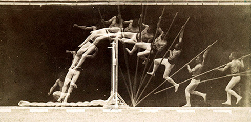
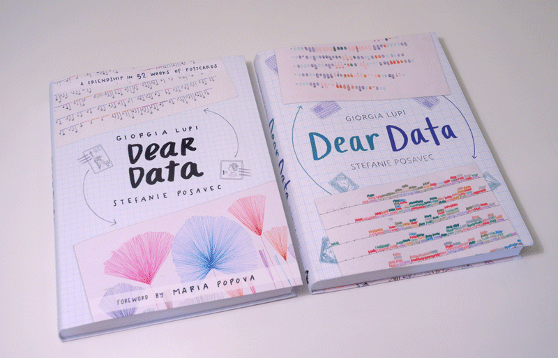
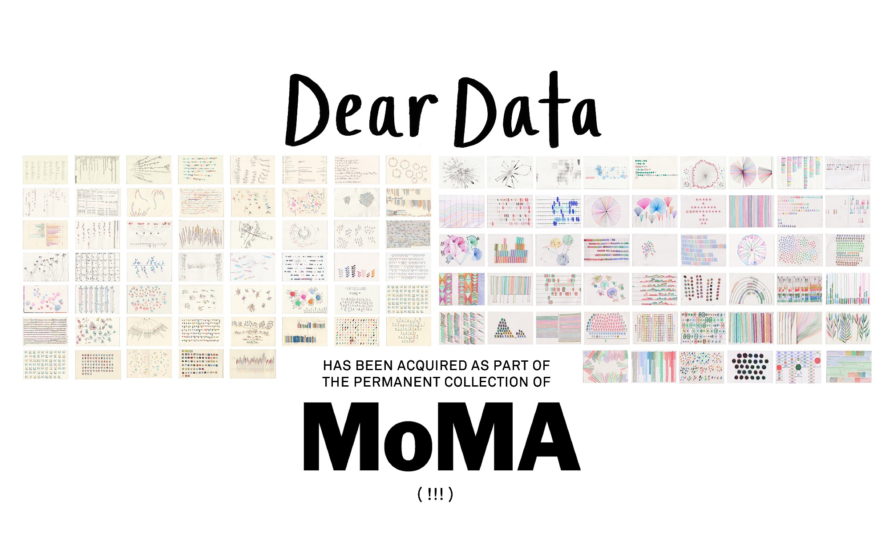

The New York Times
The New York Times

Étienne-Jules Marey, 1891
 Étienne-Jules Marey, 1882
Étienne-Jules Marey, 1882
 Marcel Duchamp, 1912
Marcel Duchamp, 1912
Giorgia Lupi & Stefanie Posavec

Giorgia Lupi & Stefanie Posavec

Giorgia Lupi & Stefanie Posavec
Уровни «аскетичности»
- Научная визуализация данных
- …
- Инфографика в масс-медиа
- Chartjunk Data Art